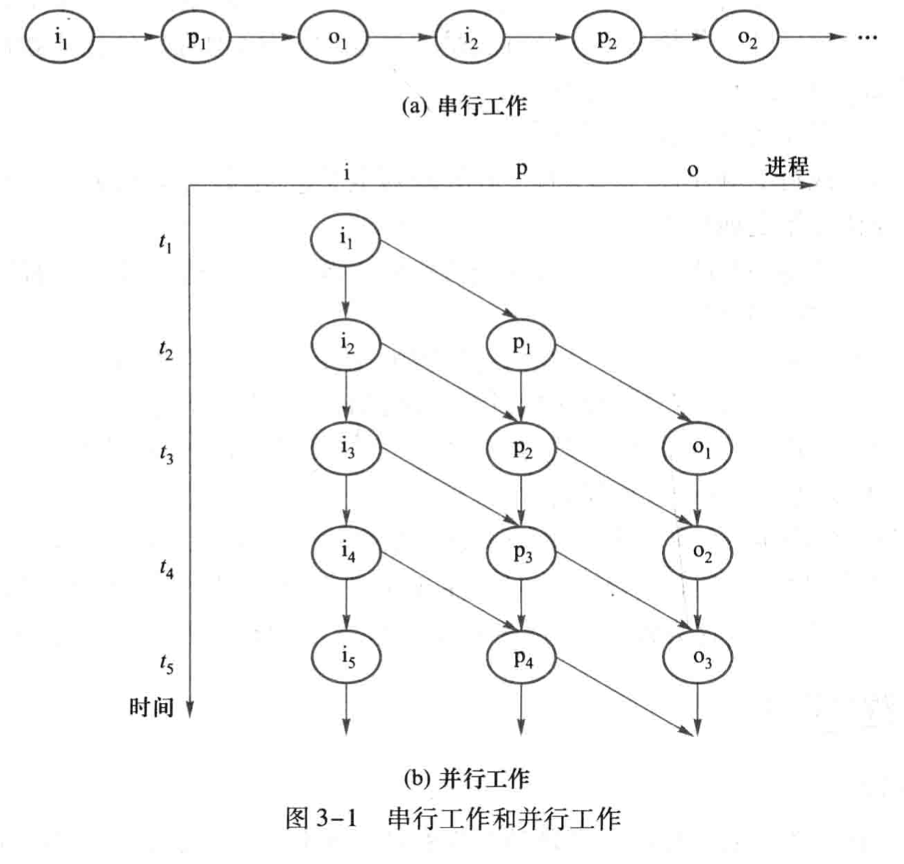
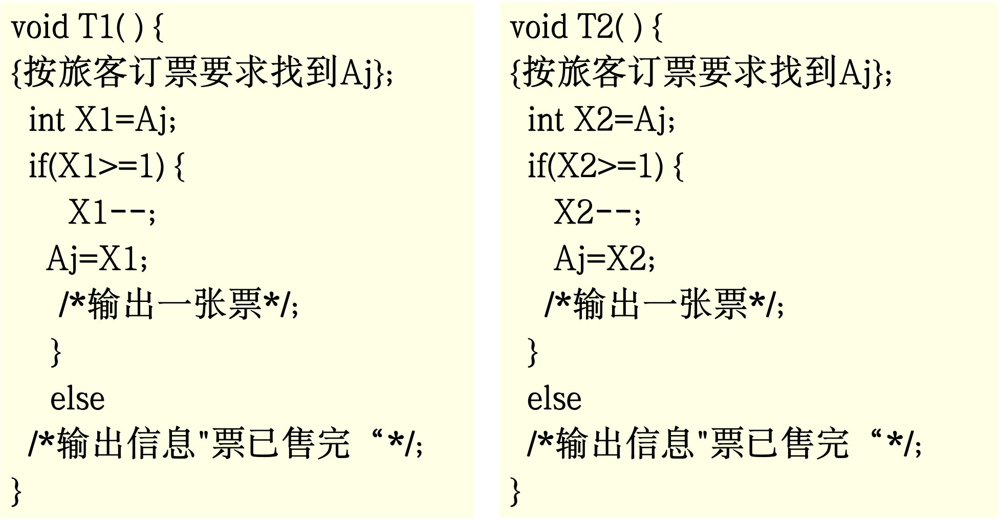
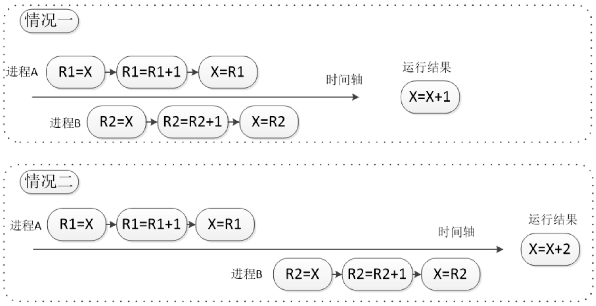
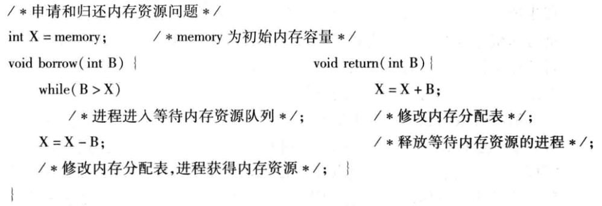

<!DOCTYPE html>
<html>
<head><meta name="generator" content="Hexo 3.8.0">
  <!-- hexo-inject:begin --><!-- hexo-inject:end --><meta charset="utf-8">
  

  
  <title>OS--同步、通信与死锁（1）_并发进程 | DongXuehui&#39;s Blog</title>
  <meta name="viewport" content="width=device-width, initial-scale=1, maximum-scale=1">
  <meta name="description" content="OS—同步、通信与死锁（1）_并发进程顺序程序设计传统的顺序程序设计具有以下特点：  执行的顺序性 环境的封闭性： 结果的确定性 过程的可再现性  程序执行的最终输出只与初始输入数据有关，而与时间无关。对于程序的编制和调试来说有很大的方便性，但是缺点就是效率不高。 并发程序设计操作系统的基本控制都是围绕着进程展开的，其中的复杂性是由于支持并发和并发机制引起的。 对于单核操作系统来说，宏观上，并发性">
<meta name="keywords" content="操作系统">
<meta property="og:type" content="article">
<meta property="og:title" content="OS--同步、通信与死锁（1）_并发进程">
<meta property="og:url" content="http://dongxh.cn/2020/04/30/OS-同步、通信与死锁（1）-并发进程/index.html">
<meta property="og:site_name" content="DongXuehui&#39;s Blog">
<meta property="og:description" content="OS—同步、通信与死锁（1）_并发进程顺序程序设计传统的顺序程序设计具有以下特点：  执行的顺序性 环境的封闭性： 结果的确定性 过程的可再现性  程序执行的最终输出只与初始输入数据有关，而与时间无关。对于程序的编制和调试来说有很大的方便性，但是缺点就是效率不高。 并发程序设计操作系统的基本控制都是围绕着进程展开的，其中的复杂性是由于支持并发和并发机制引起的。 对于单核操作系统来说，宏观上，并发性">
<meta property="og:locale" content="zh-CN">
<meta property="og:image" content="http://dongxh.cn/2020/04/30/OS-同步、通信与死锁（1）-并发进程/1.png">
<meta property="og:image" content="http://dongxh.cn/2020/04/30/OS-同步、通信与死锁（1）-并发进程/2.png">
<meta property="og:image" content="http://dongxh.cn/2020/04/30/OS-同步、通信与死锁（1）-并发进程/3.png">
<meta property="og:image" content="http://dongxh.cn/2020/04/30/OS-同步、通信与死锁（1）-并发进程/4.png">
<meta property="og:updated_time" content="2020-04-30T08:58:39.974Z">
<meta name="twitter:card" content="summary">
<meta name="twitter:title" content="OS--同步、通信与死锁（1）_并发进程">
<meta name="twitter:description" content="OS—同步、通信与死锁（1）_并发进程顺序程序设计传统的顺序程序设计具有以下特点：  执行的顺序性 环境的封闭性： 结果的确定性 过程的可再现性  程序执行的最终输出只与初始输入数据有关，而与时间无关。对于程序的编制和调试来说有很大的方便性，但是缺点就是效率不高。 并发程序设计操作系统的基本控制都是围绕着进程展开的，其中的复杂性是由于支持并发和并发机制引起的。 对于单核操作系统来说，宏观上，并发性">
<meta name="twitter:image" content="http://dongxh.cn/2020/04/30/OS-同步、通信与死锁（1）-并发进程/1.png">
  
    <link rel="alternate" href="/atom.xml" title="DongXuehui&#39;s Blog" type="application/atom+xml">
  
  
    <link rel="icon" href="/favicon.png">
  
  
    <link href="//fonts.googleapis.com/css?family=Source+Code+Pro" rel="stylesheet" type="text/css">
  
  <link rel="stylesheet" href="/css/style.css"><!-- hexo-inject:begin --><!-- hexo-inject:end -->
</head>
</html>
<body>
  <!-- hexo-inject:begin --><!-- hexo-inject:end --><div id="container">
    <div id="wrap">
      <header id="header">
  <div id="banner"></div>
  <div id="header-outer" class="outer">
    <div id="header-title" class="inner">
      <h1 id="logo-wrap">
        <a href="/" id="logo">DongXuehui&#39;s Blog</a>
      </h1>
      
    </div>
    <div id="header-inner" class="inner">
      <nav id="main-nav">
        <a id="main-nav-toggle" class="nav-icon"></a>
        
          <a class="main-nav-link" href="/">Home</a>
        
          <a class="main-nav-link" href="/archives">Archives</a>
        
      </nav>
      <nav id="sub-nav">
        
          <a id="nav-rss-link" class="nav-icon" href="/atom.xml" title="RSS Feed"></a>
        
        <a id="nav-search-btn" class="nav-icon" title="搜索"></a>
      </nav>
      <div id="search-form-wrap">
        <form action="//google.com/search" method="get" accept-charset="UTF-8" class="search-form"><input type="search" name="q" class="search-form-input" placeholder="Search"><button type="submit" class="search-form-submit">&#xF002;</button><input type="hidden" name="sitesearch" value="http://dongxh.cn"></form>
      </div>
    </div>
  </div>
</header>
      <div class="outer">
        <section id="main"><article id="post-OS-同步、通信与死锁（1）-并发进程" class="article article-type-post" itemscope itemprop="blogPost">
  <div class="article-meta">
    <a href="/2020/04/30/OS-同步、通信与死锁（1）-并发进程/" class="article-date">
  <time datetime="2020-04-30T08:54:50.000Z" itemprop="datePublished">2020-04-30</time>
</a>
    
  <div class="article-category">
    <a class="article-category-link" href="/categories/Operating-System/">Operating System</a>
  </div>

  </div>
  <div class="article-inner">
    
    
      <header class="article-header">
        
  
    <h1 class="article-title" itemprop="name">
      OS--同步、通信与死锁（1）_并发进程
    </h1>
  

      </header>
    
    <div class="article-entry" itemprop="articleBody">
      
        <h1 id="OS—同步、通信与死锁（1）-并发进程"><a href="#OS—同步、通信与死锁（1）-并发进程" class="headerlink" title="OS—同步、通信与死锁（1）_并发进程"></a>OS—同步、通信与死锁（1）_并发进程</h1><h3 id="顺序程序设计"><a href="#顺序程序设计" class="headerlink" title="顺序程序设计"></a>顺序程序设计</h3><p>传统的顺序程序设计具有以下特点：</p>
<ol>
<li>执行的顺序性</li>
<li>环境的封闭性：</li>
<li>结果的确定性</li>
<li>过程的可再现性</li>
</ol>
<p>程序执行的最终输出只与初始输入数据有关，而与时间无关。对于程序的编制和调试来说有很大的方便性，但是缺点就是效率不高。</p>
<h3 id="并发程序设计"><a href="#并发程序设计" class="headerlink" title="并发程序设计"></a>并发程序设计</h3><p>操作系统的基本控制都是围绕着进程展开的，其中的复杂性是由于支持并发和并发机制引起的。</p>
<p>对于<strong>单核操作系统</strong>来说，<strong>宏观上</strong>，并发性反映了一个时间段内几个程序都处在运行但运行尚未结束的状态；<strong>微观上</strong>，任一时刻仅有一个程序的一个操作在处理器上执行。所以对于单核操作系统来说，并发的实质是处理器在几个程序之间的多路复用。</p>
<p>程序的并发执行产生了资源共享的需求</p>
<p></p>
<h4 id="并发进程的特性"><a href="#并发进程的特性" class="headerlink" title="并发进程的特性"></a>并发进程的特性</h4><p>并发的进程有可能是无关的，也有可能是交互的。交互的进程表示它们公用一些变量集合，一个进程的执行可能会影响到其他的进程的执行结果，交互的进程之间具有制约关系。</p>
<p>因此进程之间的交互必须是under control，否则会出现不正确的计算结果。</p>
<p>所以第一个特性就是失去了程序的封闭性，<strong>如果程序执行的结果是一个与时间无关的函数，即具有封闭性。</strong>并发进程程序执行的结果不仅依赖于程序的初始条件，还依赖于程序执行时的相对速度。</p>
<p>并发进程的无关性是进程的执行与时间无关的一个充分条件，又称为<strong>Bernstein条件</strong>，假设：</p>
<p>​                        $R(P_i)=\{a_1,a_2,\dots,a_n\}$，程序$P_i$在执行期间所<strong>引用</strong>的变量集</p>
<p>​                        $W(P_i)=\{a_1,a_2,\dots,a_n\}$，程序$P_i$在执行期间所<strong>改变</strong>的变量集</p>
<p>​        若进程$P_1$和$P_2$满足条件$\{R(P_1)\cap W(P_2)\}\cup\{R(P_2)\cap W(P_1)\}\cup\{W(P_1)\cap W(P_2)\}\}=\varnothing$,则表示并发进程的执行与时间无关.</p>
<p>$\{R(P_1)\cap W(P_2)\}\cup\{R(P_2)\cap W(P_1)\}=\varnothing$，表明一个程序在两次读操作之间存储单元的数据不会被改变；</p>
<p>$\{W(P_1)\cap W(P_2)\}\}=\varnothing$，表明程序的写操作结果不会丢失。</p>
<p>因此，满足Bernstein条件，并发执行 程序就可以保持封闭性和可再现性。</p>
<h4 id="与时间有关的错误"><a href="#与时间有关的错误" class="headerlink" title="与时间有关的错误"></a>与时间有关的错误</h4><p>交互的并发程序的结果不可预测性的根本在于，它们的执行时的相对速度是不可预测的。影响交互进程的速率的因素有：处理器处理中断的方式，处理器调度的策略，还受到其他进程的影响等。</p>
<p>与时间有关的错误就是与相对执行速度相关的错误，有两种：1.结果不唯一；2.永远等待。</p>
<p><strong>结果不唯一</strong></p>
<p>飞机售票问题</p>
<p></p>
<p></p>
<p><strong>永远等待</strong></p>
<p>内存资源管理问题</p>
<p></p>
<h3 id="进程的交互：竞争和协作"><a href="#进程的交互：竞争和协作" class="headerlink" title="进程的交互：竞争和协作"></a>进程的交互：竞争和协作</h3><p>进程之间的两种基本关系：竞争与协作。</p>
<p><strong>竞争关系</strong></p>
<p>引发两个控制问题：</p>
<ol>
<li><p>死锁(deadlock)</p>
</li>
<li><p>饥饿(starvation)</p>
<p>进程互斥（mutual exclusion):指的是若干进程因相互争夺独占型资源而产生的竞争制约关系。</p>
</li>
</ol>
<p><strong>协作关系</strong></p>
<p>进程之间的协作可以是<strong>间接协作</strong>，双方不知道对方的名字，如通过访问共享资源进行松散式协作；可以是通过通信机制的紧密协作，允许进程协同工作有利于共享信息，加快计算速度等。</p>
<p>​    进程同步（synchronization）:是指为了完成共同任务的并发进程基于某个条件来协调其活动，因为需要在某些位置上排定执行的先后次序而等待，传递信号或者消息所产生的协作制约关系。</p>

      
    </div>
    <footer class="article-footer">
      <a data-url="http://dongxh.cn/2020/04/30/OS-同步、通信与死锁（1）-并发进程/" data-id="ckjcmdb8i000o03lkfms2t88c" class="article-share-link">Share</a>
      
      
  <ul class="article-tag-list"><li class="article-tag-list-item"><a class="article-tag-list-link" href="/tags/操作系统/">操作系统</a></li></ul>

    </footer>
  </div>
  
    
<nav id="article-nav">
  
    <a href="/2020/12/31/迭代器和生成器讲解/" id="article-nav-newer" class="article-nav-link-wrap">
      <strong class="article-nav-caption">Newer</strong>
      <div class="article-nav-title">
        
          迭代器和生成器讲解
        
      </div>
    </a>
  
  
    <a href="/2020/04/23/OS-处理器管理（5）-处理器调度/" id="article-nav-older" class="article-nav-link-wrap">
      <strong class="article-nav-caption">Older</strong>
      <div class="article-nav-title">OS--处理器管理（5）_处理器调度</div>
    </a>
  
</nav>

  
</article>

</section>
        
          <aside id="sidebar">
  
    
  <div class="widget-wrap">
    <h3 class="widget-title">分类</h3>
    <div class="widget">
      <ul class="category-list"><li class="category-list-item"><a class="category-list-link" href="/categories/Digital-Image-Process/">Digital Image Process</a></li><li class="category-list-item"><a class="category-list-link" href="/categories/Linux/">Linux</a></li><li class="category-list-item"><a class="category-list-link" href="/categories/Operating-System/">Operating System</a></li><li class="category-list-item"><a class="category-list-link" href="/categories/life-record/">life record</a></li><li class="category-list-item"><a class="category-list-link" href="/categories/linear-algebra/">linear algebra</a></li></ul>
    </div>
  </div>


  
    
  <div class="widget-wrap">
    <h3 class="widget-title">标签</h3>
    <div class="widget">
      <ul class="tag-list"><li class="tag-list-item"><a class="tag-list-link" href="/tags/life-record/">life record</a></li><li class="tag-list-item"><a class="tag-list-link" href="/tags/linear-algebra/">linear algebra</a></li><li class="tag-list-item"><a class="tag-list-link" href="/tags/linux/">linux</a></li><li class="tag-list-item"><a class="tag-list-link" href="/tags/python3/">python3</a></li><li class="tag-list-item"><a class="tag-list-link" href="/tags/操作系统/">操作系统</a></li><li class="tag-list-item"><a class="tag-list-link" href="/tags/数字图像处理/">数字图像处理</a></li></ul>
    </div>
  </div>


  
    
  <div class="widget-wrap">
    <h3 class="widget-title">标签云</h3>
    <div class="widget tagcloud">
      <a href="/tags/life-record/" style="font-size: 10px;">life record</a> <a href="/tags/linear-algebra/" style="font-size: 10px;">linear algebra</a> <a href="/tags/linux/" style="font-size: 13.33px;">linux</a> <a href="/tags/python3/" style="font-size: 10px;">python3</a> <a href="/tags/操作系统/" style="font-size: 20px;">操作系统</a> <a href="/tags/数字图像处理/" style="font-size: 16.67px;">数字图像处理</a>
    </div>
  </div>

  
    
  <div class="widget-wrap">
    <h3 class="widget-title">归档</h3>
    <div class="widget">
      <ul class="archive-list"><li class="archive-list-item"><a class="archive-list-link" href="/archives/2020/12/">十二月 2020</a></li><li class="archive-list-item"><a class="archive-list-link" href="/archives/2020/04/">四月 2020</a></li><li class="archive-list-item"><a class="archive-list-link" href="/archives/2020/03/">三月 2020</a></li><li class="archive-list-item"><a class="archive-list-link" href="/archives/2019/08/">八月 2019</a></li><li class="archive-list-item"><a class="archive-list-link" href="/archives/2019/03/">三月 2019</a></li></ul>
    </div>
  </div>


  
    
  <div class="widget-wrap">
    <h3 class="widget-title">最新文章</h3>
    <div class="widget">
      <ul>
        
          <li>
            <a href="/2020/12/31/迭代器和生成器讲解/">迭代器和生成器讲解</a>
          </li>
        
          <li>
            <a href="/2020/04/30/OS-同步、通信与死锁（1）-并发进程/">OS--同步、通信与死锁（1）_并发进程</a>
          </li>
        
          <li>
            <a href="/2020/04/23/OS-处理器管理（5）-处理器调度/">OS--处理器管理（5）_处理器调度</a>
          </li>
        
          <li>
            <a href="/2020/04/03/OS-处理器管理（4）-线程及其实现/">OS--处理器管理（4）_线程及其实现</a>
          </li>
        
          <li>
            <a href="/2020/04/02/OS-处理器管理（3）-进程及其实现/">OS--处理器管理（3）_进程及其实现</a>
          </li>
        
      </ul>
    </div>
  </div>

  
</aside>
        
      </div>
      <footer id="footer">
  
  <div class="outer">
    <div id="footer-info" class="inner">
      &copy; 2020 dwyane_dongxh<br>
      Powered by <a href="http://hexo.io/" target="_blank">Hexo</a>
    </div>
  </div>
</footer>
    </div>
    <nav id="mobile-nav">
  
    <a href="/" class="mobile-nav-link">Home</a>
  
    <a href="/archives" class="mobile-nav-link">Archives</a>
  
</nav>
    

<script src="//ajax.googleapis.com/ajax/libs/jquery/2.0.3/jquery.min.js"></script>


  <link rel="stylesheet" href="/fancybox/jquery.fancybox.css">
  <script src="/fancybox/jquery.fancybox.pack.js"></script>


<script src="/js/script.js"></script>


  </div><!-- hexo-inject:begin --><!-- Begin: Injected MathJax -->
<script type="text/x-mathjax-config">
  MathJax.Hub.Config({"tex2jax":{"inlineMath":[["$","$"],["\\(","\\)"]],"skipTags":["script","noscript","style","textarea","pre","code"],"processEscapes":true},"TeX":{"equationNumbers":{"autoNumber":"AMS"}}});
</script>

<script type="text/x-mathjax-config">
  MathJax.Hub.Queue(function() {
    var all = MathJax.Hub.getAllJax(), i;
    for(i=0; i < all.length; i += 1) {
      all[i].SourceElement().parentNode.className += ' has-jax';
    }
  });
</script>

<script type="text/javascript" src="https://cdnjs.cloudflare.com/ajax/libs/mathjax/2.7.1/MathJax.js">
</script>
<!-- End: Injected MathJax -->
<!-- hexo-inject:end -->
</body>
</html>